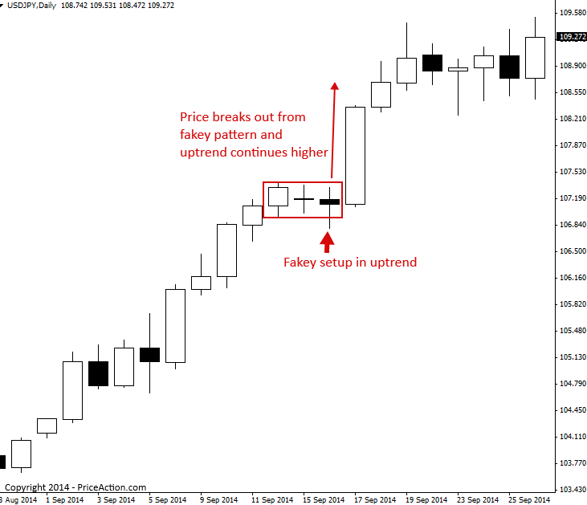
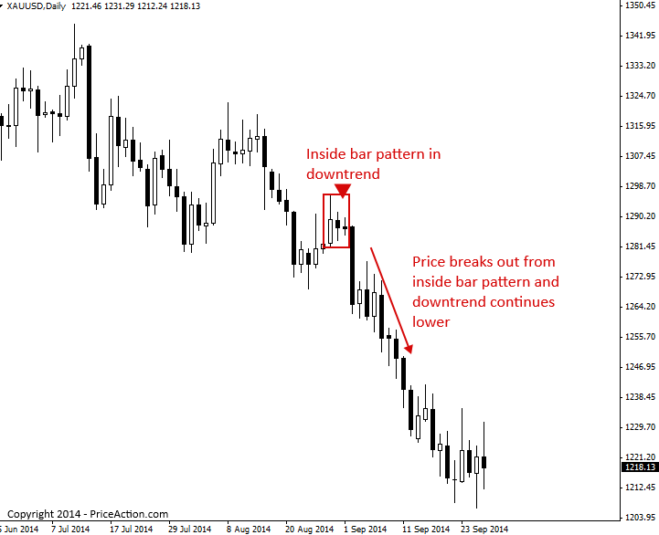
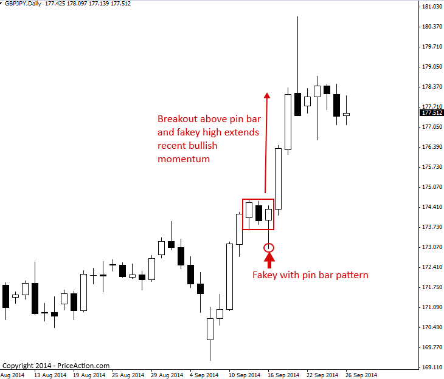
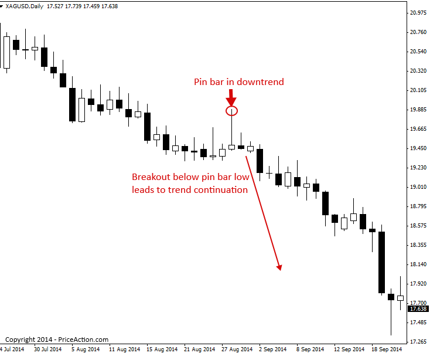
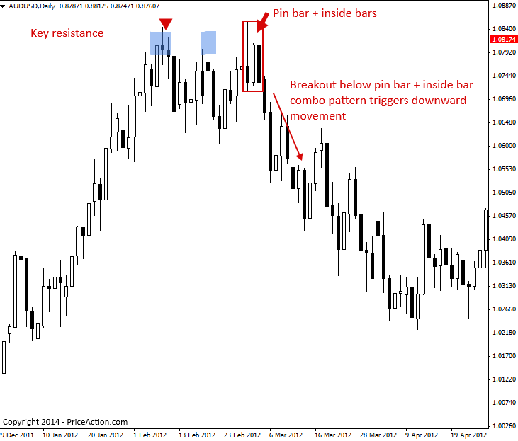
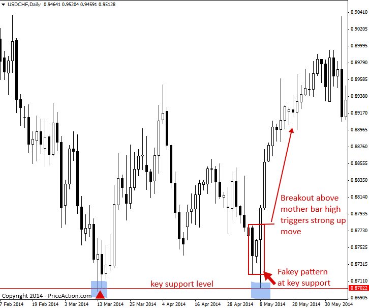

Price Action Breakout Strategies
가격 움직임 돌파 전략은 강력한 매매 신호로, 종종 시장의 강한 움직임을 유발합니다. 돌파 전략은 추세 시장에서 형성되거나 역추세 신호로 나타날 수 있습니다. 가격 움직임 돌파 전략의 가장 큰 특징은 돌파가 상승 또는 하락 방향의 강력한 움직임을 유발한다는 것입니다.
가격 움직임 돌파 전략의 몇 가지 예를 살펴보겠습니다.
지속적 플레이로 거래 가격 액션 패턴 돌파…
아래 예시 차트에서 강세 가짜 거래 전략이 형성되기 전에 명확한 상승 추세가 형성되었음을 확인할 수 있습니다. 가격이 가짜 패턴의 모체봉 고점을 돌파하자 상승 추세가 다시 상승했습니다. 따라서 이는 추세장에서 가짜 돌파 전략의 한 예이며, 추세 지속 전략이라고도 합니다.

다음 차트는 추세 시장에서 인사이드 바 돌파 전략의 예를 보여줍니다. 인사이드 바는 인사이드 바 구성의 횡보 구간에서 돌파를 보여주기 때문에 아마도 가장 '전통적인' 가격 움직임 돌파 전략일 것입니다. 1시간 차트와 같은 하위 시간대에서 일봉 차트의 인사이드 바는 횡보 구간, 때로는 삼각형 구간의 형태를 보입니다. 따라서 가격이 일봉 차트의 인사이드 바를 돌파할 때, 이는 하위 시간대의 작은 거래 구간에서도 돌파되는 것을 의미합니다.

다음 차트 예시는 핀 바 패턴을 이용한 페이키(fakey) 패턴을 돌파 전략으로 활용하는 방법을 보여줍니다. 이 예시는 강한 상승 모멘텀과 같은 방향으로 패턴이 거래되는 것을 보여주므로, 이러한 측면에서 돌파/지속 매수 전략으로 간주될 수 있습니다.
가짜 핀바 패턴이 형성되기 직전에 강한 상승세를 보인 데 주목하십시오. 그 후 상승 가짜 패턴이 형성되었습니다. 핀바와 하락으로의 거짓 돌파를 통해 잠재적인 상승 돌파가 다가오고 있으며, 이는 추가 상승으로 이어질 수 있음을 알 수 있었습니다. 가격이 핀바 고점을 돌파한 후, 상승 돌파가 시작되면서 가격이 급등했음을 알 수 있습니다.

상승이든 하락이든 강한 추세 속에서는 최근 고점이나 저점 근처에서 핀 바, 인사이드 바 패턴, 심지어는 가짜 패턴이 나타나는 경우가 있습니다. 이러한 패턴은 가격 돌파가 이어지는 추세 지속으로 이어질 수 있습니다. 최근 하락 추세의 저점이나 상승 추세의 고점에서 가격 움직임 패턴을 매매하는 것은 까다로울 수 있습니다. 일반적으로 가치(지지선 또는 저항선)로의 회귀를 먼저 보고 싶어 하기 때문입니다. 하지만 아래 차트에서 볼 수 있듯이 하락 추세가 매우 강할 경우, 움직임의 끝부분에서 형성된 가격 움직임 신호가 약간의 되돌림이 발생하더라도 가격이 추세 방향으로 계속 움직일 수 있도록 유도하는 경우가 많습니다. 이러한 예는 당시 이 시장의 저점 근처에서 형성된 핀 바 매도 신호에서 확인할 수 있습니다. 비록 약간의 되돌림이 있었음에도 불구하고 가격이 핀 바의 저점을 돌파했을 때, 또 다른 큰 하락세가 시작되었다는 점에 주목해야 합니다.

주요 차트 수준에서 거래 가격 액션 패턴 돌파
'브레이크아웃'을 '반전 플레이'로 어떻게 매매할 수 있는지 궁금하실 겁니다. 정말 간단합니다. 가격 움직임 패턴이 차트의 주요 지지선이나 저항선에서 형성되고, 가격이 해당 패턴을 돌파하여 주요 지지선에서 반전한다면, 이것이 바로 '브레이크아웃 - 반전 플레이'입니다.
아래 차트 예시에서는 주요 차트 저항선에서 형성된 핀바 인사이드 바 콤보 패턴을 볼 수 있습니다. 가격이 핀바(두 인사이드 바의 모봉이기도 함)의 저점 아래로 하락하자, 한 달 이상 지속된 큰 하락세가 시작되었습니다.

주요 차트 레벨에서 가격 움직임 패턴 돌파를 트레이딩하는 또 다른 예시를 소개합니다. 이 예시에서는 시장의 주요 지지선에서 형성된 강세 가짜 매수 신호를 살펴보겠습니다. 가격이 내부봉의 모체봉 고점을 돌파했을 때(가짜는 내부봉의 거짓 돌파임을 기억하세요) 상승으로 이어지는 강력한 방향성을 보였습니다. 주요 지지선이나 저항선에서 이와 같은 가짜 패턴이 나타나면 돌파 가능성이 있음을 인지해야 합니다.

가격 액션 돌파 전략 거래에 대한 팁
- 가격 움직임 돌파 전략은 종종 강력한 움직임을 유발합니다. 추세 시장에서 이러한 전략이 지속형 전략, 주요 차트 레벨에서의 돌파 또는 거래 범위 돌파로 나타나는지 주의 깊게 살펴보세요.
- 브레이크아웃 전략은 일반적으로 스탑 진입 주문과 함께 사용됩니다. 즉, 가격 변동 브레이크아웃 전략의 고점 또는 저점 근처에서 매수 또는 매도 스탑 주문을 넣고, 가격이 브레이크아웃될 때 진입 주문과 일치하여 시장에 진입하게 됩니다. 모멘텀에 따라 시장에 진입한다는 것은 좋은 일이며, 적어도 거래가 유리하게 시작된다는 '합류' 효과를 얻을 수 있습니다.
https://priceaction.com/price-action-university/beginners/price-action-breakout-strategies/